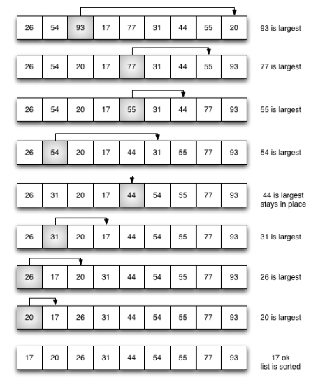
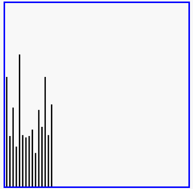

选择排序
选择排序（Selection sort）是一种简单直观的排序算法。它的工作原理如下。首先在未排序序列中找到最小（大）元素，存放到排序序列的起始位置，然后，再从剩余未排序元素中继续寻找最小（大）元素，然后放到已排序序列的末尾。以此类推，直到所有元素均排序完毕。
选择排序的主要优点与数据移动有关。如果某个元素位于正确的最终位置上，则它不会被移动。选择排序每次交换一对元素，它们当中至少有一个将被移到其最终位置上，因此对n个元素的表进行排序总共进行至多n-1次交换。在所有的完全依靠交换去移动元素的排序方法中，选择排序属于非常好的一种。
选择排序分析
排序过程：

 红色表示当前最小值，黄色表示已排序序列，蓝色表示当前位置。
红色表示当前最小值，黄色表示已排序序列，蓝色表示当前位置。
def selection_sort(alist):
n = len(alist)
# 需要进行n-1次选择操作
for i in range(n-1):
# 记录最小位置
min_index = i
# 从i+1位置到末尾选择出最小数据
for j in range(i+1, n):
if alist[j] < alist[min_index]:
min_index = j
# 如果选择出的数据不在正确位置，进行交换
if min_index != i:
alist[i], alist[min_index] = alist[min_index], alist[i]
alist = [54,226,93,17,77,31,44,55,20]
selection_sort(alist)
print(alist)
时间复杂度
- 最优时间复杂度：O(n2)
- 最坏时间复杂度：O(n2)
- 稳定性：不稳定（考虑升序每次选择最大的情况）
选择排序演示
